数据来源：知识星球「南半球聊财经」星主 Jason 不跪 当日发帖 当天发帖数量：14 篇（最新 14:20 → 最早 10:16） 图片：共 24 张（已嵌入本文）
今日要点速览
今天 Jason 的帖子被一条主线串起来：全球货币政策正在由"降息周期"切换成"加息/分化周期"，美元与美国资产成为这轮的最大赢家。 美联储被市场押注 9 月、12 月连续加息（CME 显示年内两次加息概率已升到 55%），美元指数逼近年内新高，黄金因为"加息预期"暴跌、回吐今年涨幅；与此同时资金创纪录涌入美股科技股，而中国、欧洲股票基金持续被抽血（中国已连续 12 周净流出）。
第二条线是中国经济偏弱 + 政策对冲：5 月零售出现 2023 年以来首次萎缩，中国紧急追加 625 亿元以旧换新补贴；JPM 下调中国二季度 GDP 至 3.3%，并点出地产"时间不一致陷阱"；618 也只是"温和增长、平台从拼 GMV 转向拼利润"。
第三条线是地缘与产业博弈：中东（以色列—真主党停火、伊朗油轮重新出货）令油价一周跌 9%；欧盟对中国电动车继续设防、德国总理喊话用"广场协议"逼人民币升值；美国调查 ASML 的 EUV 光刻机是否流入中国。一句话——风险资产里"美国科技+美元"独强，其余地区资金外流，通胀与加息是今天所有图表背后的共同变量。
帖 1 ｜ 14:20 ｜ 美联储加息概率（CME FedWatch）#金融
帖子原文：
CME：9月美联储加息概率75%，12月加息概率90%，今年两次加息概率55%
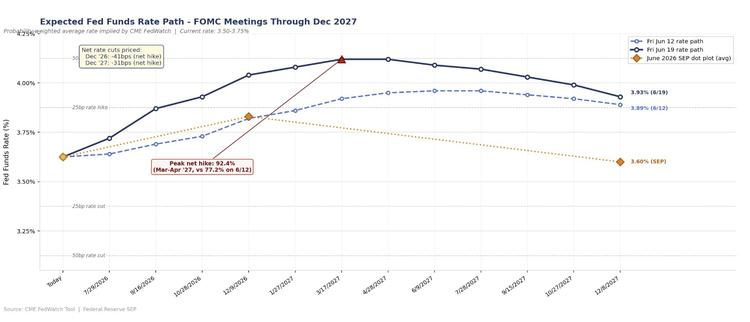
一句话核心： 市场现在押的不是降息，而是美联储年内"接着加息"。
背景与关键数据： CME 的「FedWatch」工具，是用联邦基金利率期货价格反推市场对每次议息会议加/降息概率的标准工具——可以理解成"赌场赔率"，反映的是真金白银下注后的市场共识，而不是某个分析师的嘴炮。图中蓝色实线是 6/19 这天市场隐含的"利率路径"，当前基准利率 3.50–3.75%，路径一路向上爬到 2027 年 3 月附近见顶约 4.1%。框里写着"Peak net hike 92.4%（净加息见顶概率），比一周前（6/12）的 77.2% 还高"，说明加息预期这一周明显升温。对照美联储自己 6 月点阵图（橙色虚线，年底 3.60%）——市场比美联储官员更鹰派。
图片解读： 三条线分别是 6/12 路径（浅蓝虚线）、6/19 路径（深蓝实线）、美联储 6 月点阵图均值（橙色）。深蓝线整体高于浅蓝线，意味着一周内市场把利率预期往上抬了；橙色线最低且年底就掉头向下，说明官方还想降息，但市场不信。
为什么重要： 利率是所有资产的"地心引力"。市场从"赌降息"变成"赌加息"，直接利空债券、黄金、利率敏感的成长股估值，利多美元和现金。今天后面几篇（美元走强、黄金暴跌、资金涌入美股）本质都是这张图的连锁反应。
延伸知识： 「点阵图（dot plot）」是美联储每季度公布的、19 位官员对未来利率的匿名预测散点图；而 FedWatch 是市场预期。两者常常打架，当市场预期持续高于点阵图，往往逼着美联储事后"补加息"以维护信誉——这也是 2022 年通胀失控时发生过的剧本。
帖 2 ｜ 11:49 ｜ 各资产类别历年回报率（Charlie Bilello）#金融
帖子原文：
charlie：美元资产收益率更新
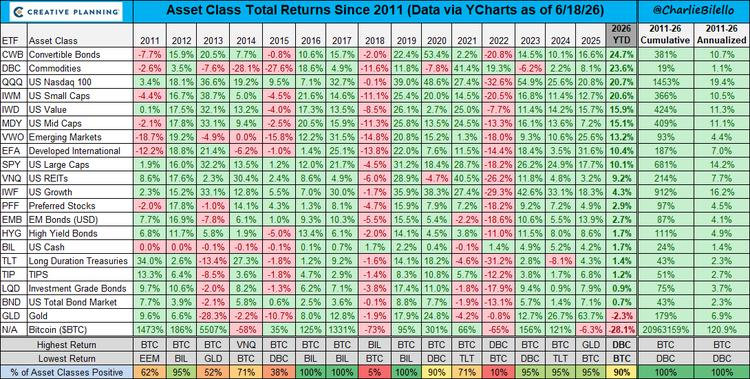
一句话核心： 一张"自 2011 年以来各类资产逐年回报"的全景表，2026 年至今（截至 6/18）的赢家是大宗商品，输家是比特币。
背景与关键数据： 作者 Charlie Bilello 是知名的市场数据博主，这张表把十几类资产（美股各风格、各国股市、债券、REITs、黄金、大宗商品、比特币、现金）按年份排成红绿热力表，绿色=正收益、红色=负收益。最右一列「2026 YTD」是今年至今表现：大宗商品（DBC）约 +23.6% 领涨，黄金、可转债等也为正；比特币（BTC）约 -28.1% 垫底。 底部统计行显示 2026 年至今"正收益资产占比 90%"——绝大多数资产都赚钱，唯独比特币逆势大跌。
图片解读： 横轴是年份（2011→2026），纵轴是资产。看最后一列颜色就知道今年谁强谁弱；看每行的颜色波动，能直观感受哪类资产"忽冷忽热"（比如比特币那行红绿剧烈跳动，波动极大）。
为什么重要： 这是检验"资产配置直觉"的体检表。今年大宗商品强、比特币弱，恰好印证了"通胀/加息环境"的逻辑——实物商品抗通胀，而高估值、靠流动性驱动的比特币在加息预期下承压。
延伸知识： 这张表是「资产轮动（asset rotation）」的最佳教材——没有任何一类资产能年年第一，2013 年的输家可能是 2016 年的赢家。这正是「资产配置/再平衡」存在的理由：分散持有、定期把涨多的卖一点补给跌多的，长期反而能熨平波动。
帖 3 ｜ 11:42 ｜ AI 占标普权重逼近历史泡沫上限（BofA）#美股
帖子原文：
BOFA：人工智能现在占标普指数的39%
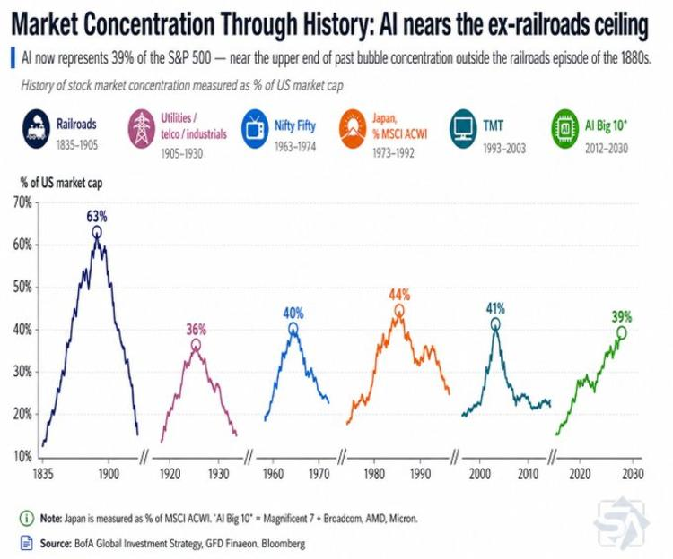
一句话核心： AI 相关股票已占标普 500 市值的 39%，接近历史上历次"市场集中度泡沫"的天花板。
背景与关键数据： 美银（BofA）把美股历史上几次"少数行业霸占整个市场"的时刻拉在一起对比：铁路时代（1835–1905）顶峰占美国市值 63%、公用事业（1905–1930）36%、漂亮 50（Nifty Fifty，1963–1974）40%、日本占 MSCI 全球（1973–1992）44%、科网泡沫 TMT（1993–2003）41%，而今天的"AI 十巨头"（七巨头 + 博通、AMD、美光）已到 39%。
图片解读： 每条彩色曲线是一段历史的"该主题占市值比重"，都呈现"尖塔形"——快速冲高然后崩塌。绿色（AI）正处在右侧快速抬升、逼近 40% 这条多数泡沫见顶的水平线，唯一更高的只有 19 世纪的铁路。
为什么重要： 集中度本身不等于马上崩盘，但它意味着指数风险高度绑定在少数几只股票上。买"标普 500 指数基金"以为很分散，实际上近四成押注在 AI 几家公司——一旦 AI 叙事降温，被动指数投资者会一起受伤。
延伸知识： 「市场集中度」是衡量泡沫的经典视角，但历史也提醒我们：铁路曾冲到 63% 才见顶，所以"接近上限"≠"立刻见顶"。更稳妥的看法是——集中度高时，分散投资的实际效果在下降，需要主动检查自己的持仓是否过度暴露在同一主题上。
帖 4 ｜ 11:35 ｜ 外资持有韩国股市比例创纪录（38.3%）#股市
帖子原文：
TKL：海外投资者现占韩国股市Kospi市值创纪录的38.3%。自2025年6月以来，这一比例已上升7个百分点，自2024年以来增长了三倍。外资流入主要集中在大型股，包括三星和SK海力士等半导体，以及次级电池、电力设备和国防。
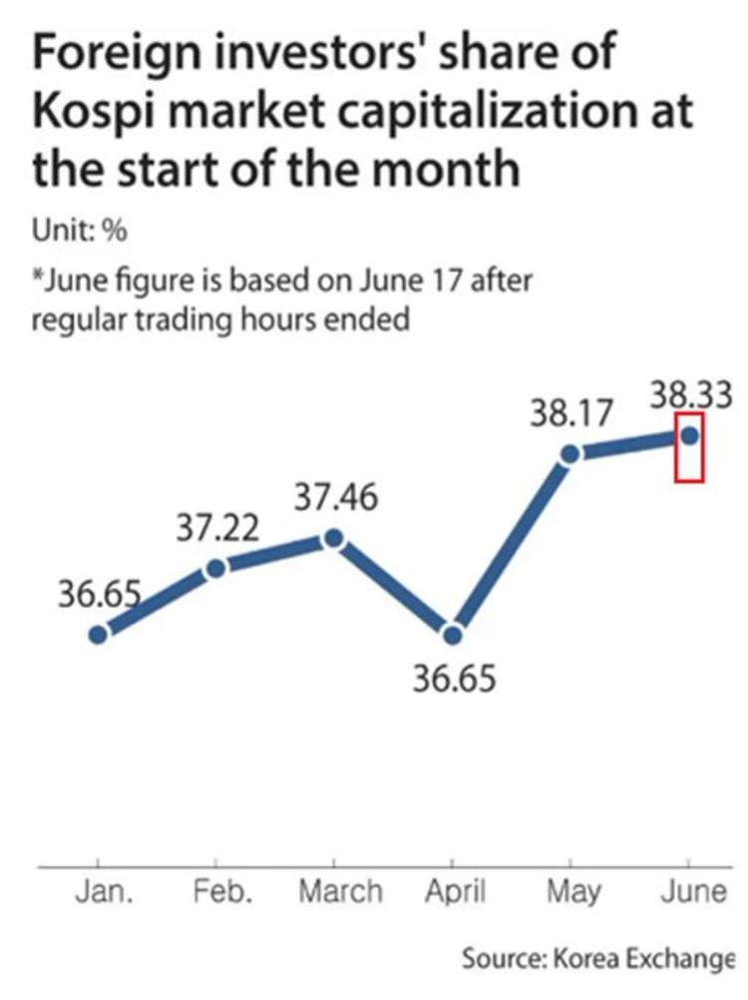
一句话核心： 外国投资者持有韩国股市的比例创历史新高，钱主要砸向三星、SK海力士这些半导体大盘股。
背景与关键数据： Kospi 是韩国综合股价指数（相当于韩国版"上证综指"）。外资占比从今年初约 36.65%，4 月回落到 36.65% 后一路冲到 6 月的 38.33%，较 2025 年 6 月上升 7 个百分点。
图片解读： 折线是每月初外资持有 Kospi 市值的占比，1 月 36.65→3 月 37.46→4 月回落到 36.65→5 月 38.17→6 月（截至 6/17）38.33%，红框标出的 6 月是最新高点。整体是"先盘整、4 月一个小坑、随后陡升"的形态。
为什么重要： 这和"全球资金从中国/欧洲流向高景气资产"是同一个故事的另一面。外资集中买韩国半导体，说明 AI/半导体景气把资金吸向了东亚的"卖铲人"（三星、海力士是 AI 芯片所需高带宽内存 HBM 的核心供应商）。但外资占比越高，市场对外资情绪也越敏感——一旦外资回流美国，韩股也容易被"反向抽水"。
延伸知识： 外资高占比是"双刃剑"：流入时推升股价、压低风险溢价；流出时则放大波动。韩国、台湾这类"出口+科技"小型开放市场，历来是全球风险偏好的"放大器"——想观察全球资金对科技的真实态度，盯这些市场常比盯美股本身更灵敏。
帖 5 ｜ 11:32 ｜ 中国追加 625 亿元以旧换新补贴 #TAX
帖子原文：
财新：中国将在6月底前向消费者以旧换新补贴注入625亿元人民币，以对冲5月消费数据的疲软
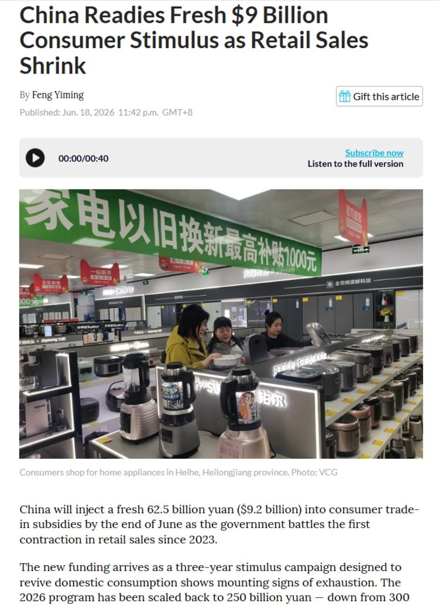
一句话核心： 5 月零售出现 2023 年以来首次萎缩，中国紧急追加补贴救消费。
背景与关键数据： 据 Bloomberg，中国将在 6 月底前注入 625 亿元（约 92 亿美元）家电/汽车"以旧换新"补贴，应对自 2023 年来零售首次收缩。值得注意的是：2026 年这轮补贴规模已被缩减到 2500 亿元，比原计划的 3000 亿少了 500 亿——说明这套"三年刺激"已现疲态。
图片解读： 配图是 Bloomberg 报道截图，画面是黑龙江黑河一家家电卖场，绿色横幅写着"家电以旧换新最高补贴 1000 元"，消费者在看豆浆机/破壁机——直观呈现政策落地的场景。
为什么重要： "以旧换新"是典型的需求前置政策——用补贴把未来的购买提前到现在。短期能拉数据，但容易"透支"后续需求，补贴一退坡消费就回落。补贴规模缩水 + 零售仍萎缩，说明政策边际效果在递减，这也是后面 JPM 下调中国 GDP 的背景。
延伸知识： 「以旧换新/消费券」属于财政刺激里的"定向补贴"。它和"发钱（现金转移）"的区别在于：补贴绑定具体商品（必须买家电/车），乘数效应集中在特定行业；但也更容易扭曲——比如把本来明年要换的冰箱提前到今年换，明年就出现"需求空洞"。
帖 6 ｜ 11:26 ｜ 全球央行：普降时代结束（Bloomberg）#金融
帖子原文：
bloomberg：统计了全球 52个市场 中央银行的加息和降息净数量（不含GDP权重），现在全球央行不再是一边倒降息，而是重新进入"有的加息、有的降息、有的观望"的分化阶段。5月全球央行在降息和加息之间大致各占一半。
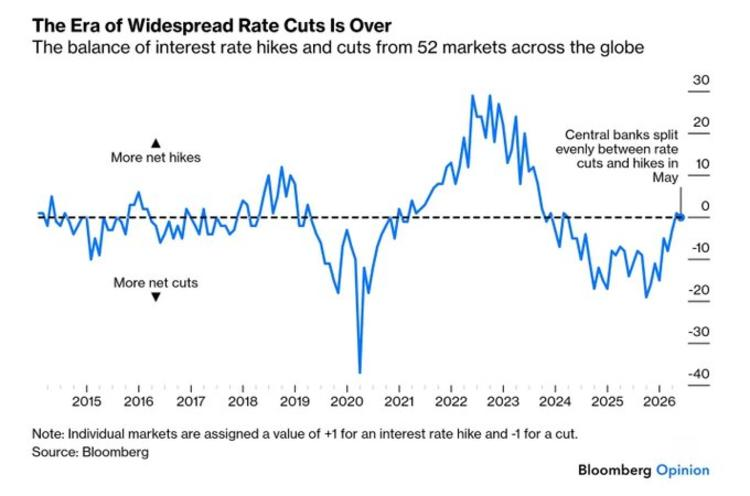
一句话核心： "全球一起降息"的时代结束了，央行重新进入加减息各半的分化阶段。
背景与关键数据： Bloomberg 把全球 52 个市场的央行动作做成一个净值指标：每个加息记 +1、每个降息记 -1，加总看方向。图的标题就叫"The Era of Widespread Rate Cuts Is Over（普遍降息时代结束）"。
图片解读： 纵轴是"净加息（上）/ 净降息（下）"，0 是分界线。2020 年疫情时跌到 -40（全球疯狂降息救市），2022–2023 通胀期冲到 +25 以上（全球抢着加息），2024–2025 回落到净降息区间（-20 附近），而 2026 年这条线又从 -20 快速拉回到 0 附近——5 月加息和降息大致各占一半。
为什么重要： 这是"全球宏观天气预报"。普降时代意味着流动性宽松、风险资产普涨；而"分化阶段"意味着资金会更挑剔地在不同国家间流动——谁加息、货币谁强，资金就往哪走。这正好解释了为什么美元走强、资金回流美国。
延伸知识： 央行政策"同步 vs 分化"决定了汇率波动的大小。大家一起降息时汇率相对平静；一旦分化（美国加、别人降），利差扩大，资金套利流动加剧，新兴市场货币容易承压。这就是「利差交易（carry trade）」活跃的土壤——借低息货币、买高息货币吃息差。
帖 7 ｜ 11:21 ｜ 泽连斯基谈对俄制裁与特朗普表态 #其他国家经济
帖子原文：
泽连斯基：我们非常希望俄乌这场战争尽快结束。为此，我们需要（对俄）制裁。特朗普表示他将恢复这一政策。
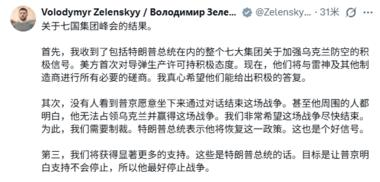
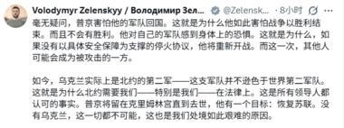
一句话核心： 泽连斯基在 G7 后喊话要靠制裁逼俄罗斯谈判，并称特朗普将恢复制裁。
背景与关键数据： 两张图是泽连斯基推文的中文翻译截图，核心三点：①感谢 G7（七国集团）峰会关于加强乌克兰防空的积极结果，美方愿提供导弹与防空系统；②强调"没有制裁，普京不会真心坐下来谈"，希望特朗普恢复强硬制裁；③称特朗普已表示会给予明显支持，目标是逼普京停火。
图片解读： 纯文字推文截图（非数据图表），来自泽连斯基官方账号，内容是其对 G7 峰会结果的总结与对美制裁政策的呼吁。
为什么重要： 地缘政治直接牵动能源与避险情绪。如果美国恢复对俄制裁，可能扰动原油/天然气供应预期；但叠加今天中东停火（油价跌），市场对地缘风险的整体定价反而偏缓和。对资产而言，俄乌走向"边打边谈"通常被解读为不确定性下降。
延伸知识： 「制裁」作为经济武器，效果取决于"封锁的彻底程度"。对俄能源制裁的难点在于——俄罗斯能把石油折价卖给印度、中国等买家（即所谓"影子船队"绕道），所以制裁往往压低俄方利润、却难以完全切断供应。这也是为什么市场对"恢复制裁"的反应通常没有想象中剧烈。
帖 8 ｜ 11:18 ｜ JPM 下调中国二季度 GDP 与地产"时间不一致陷阱"#经济数据
帖子原文：
JPM：把中国2Q GDP预测从原来的 4.0% q/q 下调到 3.3% q/q。同时，把3Q从 3.2% 上调到 3.5%，把4Q从 3.2% 上调到 3.7%。按同比看，2026全年预测仍是 4.7%。2季度主要问题是财政发力不足，政府债发行和资金落地不够前置，导致基建和固定资产投资明显走弱。中国地产陷入一种 time-inconsistency trap，也就是时间不一致陷阱：政策希望改善可负担性、降低经济对地产依赖，但又不愿意让房价快速出清，因为那会冲击家庭财富和地方政府。结果就是价格清算被放慢，调整主要通过成交量、新开工、投资下滑完成。
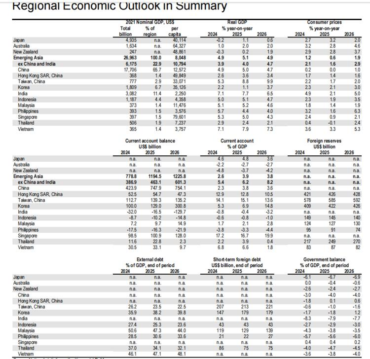
一句话核心： 摩根大通下调中国二季度增速（财政发力慢），并点出地产"既想去依赖、又不敢让房价跌"的两难。
背景与关键数据： JPM 把 2Q 环比（q/q，季度环比折年）从 4.0% 砍到 3.3%，但把 3Q/4Q 上调（3.5%、3.7%），相当于"把增长往后挪"，全年同比仍维持 4.7%。配图是 JPM「亚太区域经济展望汇总表」，中国实际 GDP 2024/2025/2026 分别为 4.9%/5.0%/4.7%，CPI 仅 0.0%/1.0%（接近通缩）。
图片解读： 表格分块列出各经济体的名义 GDP、实际 GDP 同比、CPI、经常账户、外储、政府赤字等。重点看中国行：增速逐年小幅放缓、物价极低（2026 CPI 预测 1.0%）——这是"需求弱、有通缩压力"的典型画像，和前面"全球大多在抗通胀"形成鲜明反差。
为什么重要： "时间不一致陷阱（time-inconsistency trap）"是今天最值得记的概念：政策当下说一套、事后做另一套，市场就不再相信。具体到地产——既喊去库存又托着房价，导致价格不出清、靠成交量和开工萎缩来慢慢调整，拖长了出清时间，压制居民信心和消费。
延伸知识： 「时间不一致」是诺奖经济学概念（Kydland & Prescott）。经典例子：央行事前承诺"绝不放水"，但经济一差又忍不住降息，于是大家预期它一定会放水，承诺就失效了。破解之道是"可信的规则"而非"相机抉择"——这也是为什么独立、规则明确的央行更能稳定预期。
帖 9 ｜ 11:00 ｜ 美国调查 ASML 的 EUV 光刻机是否流入中国 #金融
帖子原文：
zerohedge：美国调查荷兰芯片设备巨头ASML的一台极紫外光刻（EUV）机器可能已进入中国。ASML则向bloomberg否认了这一点。
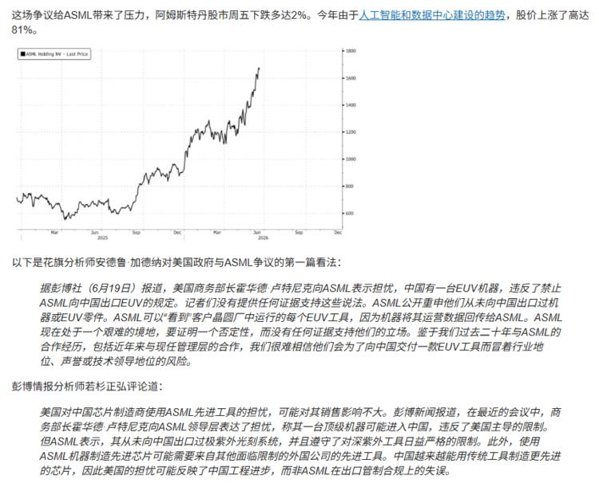
一句话核心： 美国怀疑一台 EUV 光刻机违规流入中国，ASML 否认；消息令 ASML 股价当天跌约 2%。
背景与关键数据： ASML 是荷兰公司、全球唯一能造 EUV（极紫外）光刻机的厂商——这是制造最先进芯片（7nm 以下）的"独门钢印机"，单台造价超 1.5 亿欧元，且被美国主导的出口管制明令禁止卖给中国。配图显示 ASML 股价今年大涨约 81%（从约 600 涨到约 1700），因 AI 和数据中心建设拉动需求；当天因调查传闻跌约 2%。图下方还附了花旗与彭博分析师的看法，倾向认为对其销售影响不大，且更可能反映"中国用传统设备造先进芯片的工程进步"，而非 ASML 违规。
图片解读： 折线是 ASML 股价走势，2025 年中起开启主升浪、几乎翻倍，右端最近因调查消息出现小幅回落。一根长期上行的成长股曲线，配一个短期小坑。
为什么重要： ASML 是"AI 算力军备竞赛"最上游的卖铲人，它的出口合规问题牵动整个半导体地缘格局。但分析师的判断很关键：即使调查属实，对 ASML 业绩影响有限，反而说明中国在被"卡脖子"下仍在用替代路径推进——这是观察"芯片脱钩"成效的重要风向标。
延伸知识： 「光刻机」是芯片制造的核心——把电路图案"印"到硅片上，EUV 用 13.5nm 极紫外光，能刻出最精细的线路。美国对华管制的核心就是卡住 EUV，让中国造不出最先进制程。但管制也催生"用旧设备多次曝光（DUV multi-patterning）"等替代方案——技术封锁往往加速被封锁方的自主研发。
帖 10 ｜ 10:57 ｜ 德国喊话"广场协议"逼人民币升值 + 欧洲产业困境 #其他国家经济
帖子原文：
bloomberg：德国梅尔茨呼吁以"广场协议"方式推动人民币升值，表示"如果补贴被系统性地投向产能过剩，而这种情况又叠加了一种不可自由兑换的货币，以及一个因相对封闭而无法真正参与全球资本市场的体系——那么这就构成了竞争扭曲，我们不能接受。"背景是欧洲汽车股自2024年4月以来已下跌40%，反馈出欧洲汽车产业的岌岌可危。而这个行业承载着欧洲1400万就业岗位。 另一边西班牙正在权衡是否继续对太阳能进行财政补贴，过度依赖太阳能是西班牙去年四月全国停电的核心问题。
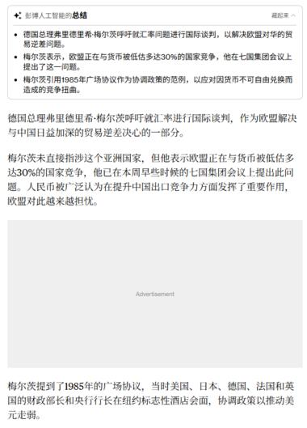
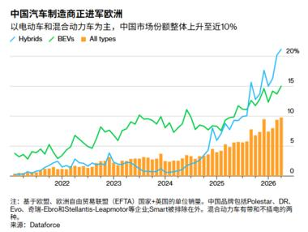
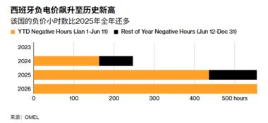
一句话核心： 德国总理拿"广场协议"喊话逼人民币升值，背后是欧洲汽车业被中国电动车冲击、产业岌岌可危。
背景与关键数据： 德国总理梅尔茨指责中国"系统性补贴产能过剩 + 货币不可自由兑换 + 资本市场封闭"构成竞争扭曲，呼吁用类似 1985 年「广场协议」的国际协调逼人民币升值。背景数据：欧洲汽车股自 2024 年 4 月已跌 40%，而汽车业承载欧洲 1400 万就业。另一头，西班牙在权衡是否继续补贴太阳能——去年 4 月全国大停电的核心原因正是"过度依赖太阳能"。
图片解读：
- 图1：Bloomberg AI 对梅尔茨讲话的要点总结（文字截图）。
- 图2：「中国汽车制造商正进军欧洲」——绿线（混动 Hybrids）、蓝线（纯电 BEVs）、橙柱（所有类型）显示中国车在欧洲市场份额整体升向近 10%，且混动增长尤其陡。
- 图3：「西班牙负电价飙升至历史新高」——条形图显示负电价小时数逐年暴增，2026 年已超 500 小时（蓝色为 1–6 月已发生、黑色为下半年预估），远超往年。
为什么重要： 这是"中国产能过剩 vs 西方再平衡"矛盾的集中爆发。汇率被当成贸易武器——欧洲想靠人民币升值削弱中国出口竞争力。而西班牙"负电价"图揭示绿色转型的副作用：光伏装太多，中午阳光最足时电价跌成负数（发电厂倒贴钱让你用电），电网不稳甚至引发停电。
延伸知识： 「广场协议（Plaza Accord, 1985）」是美日德法英五国在纽约广场饭店达成的协议，联手让美元贬值（主要是日元、马克升值）以纠正美国贸易逆差。结果日元两年内升值近一倍，普遍被认为是日本随后资产泡沫与"失去的十年"的导火索之一。梅尔茨提它，等于在暗示"对中国也来一次"——但中国资本账户不开放、汇率不自由浮动，复制广场协议的难度极大。
帖 11 ｜ 10:47 ｜ JPM：欧盟设防 vs 中国补贴，中国车企份额仍结构性提升 #经济数据
帖子原文：
JPM：6月18日有两个与中国汽车相关的重要政策事件。第一，欧洲方面，欧盟峰会没有对中国PHEV征收新关税进行投票，但维持现有对中国BEV的反补贴关税，并开始讨论更强的防御工具，例如最低进口价格、进口数量上限等。我们认为，随着中国车企从BEV出口转向PHEV出口，欧盟下一步政策收紧很可能会针对PHEV。欧盟把问题从"是否对某类车征税"升级成了中国补贴性产能过剩 + 欧洲贸易再平衡 + 战略依赖风险。欧盟对中国商品贸易逆差已经达到约 每天10亿欧元。虽然欧盟政策风险上升，我们仍认为中国车企在欧洲的份额提升是结构性的。预测中国车企在西欧市场份额到2028年可能超过 20%，对应约 250万辆乘用车。 第二，中国国内方面，政府推出新一轮农村汽车补贴，但我们认为，中国消费者信心不足，可能限制政策拉动效果；我们目前不打算上调2026年乘用车预测，仍预计中国乘用车销量下跌 15%。
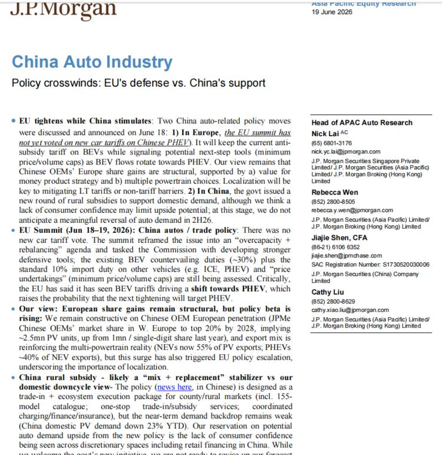
一句话核心： 欧盟没投新关税但升级防御工具；JPM 认为中国车在欧份额仍会结构性升到 2028 年超 20%，但中国国内车市今年仍要跌 15%。
背景与关键数据： 这是上一帖（德国喊话）的专业版深化。关键数字：欧盟对中国商品贸易逆差约 每天 10 亿欧元；预测中国车企西欧份额 2028 年超 20%（约 250 万辆）；中国国内 PV 需求今年 -23% YTD，全年乘用车销量预测 -15%。术语：BEV=纯电动，PHEV=插电混动。中国车企正从出口纯电转向出口插混（PHEV 现占新能源出口约 40%），欧盟下一步很可能针对 PHEV 设限。
图片解读： 配图是 J.P.Morgan 6/19 的研报首页「China Auto Industry — Policy crosswinds: EU's defense vs China's support（政策交叉风：欧盟防御 vs 中国扶持）」，要点逐条列出欧盟峰会未投票、维持约 30% 反补贴税、考虑"最低进口价/进口配额"等更强工具。
为什么重要： 揭示了贸易战的"猫鼠游戏"——你对纯电加税，我就改出口插混；你再对插混设限……欧盟于是把议题从"对某类车征税"升级成"产能过剩 + 战略依赖"的系统性对抗。对投资而言，中国车企出海是确定的长期趋势，但政策摩擦会一路抬升，估值要打"政策风险折扣"。
延伸知识： 「反补贴税（countervailing duty）」针对的是"出口国政府补贴造成的低价"，与针对"低于成本倾销"的反倾销税是两回事。欧盟现在的思路是从单一关税转向"最低限价 + 配额"组合拳——因为单纯加税容易被"换品类、设海外工厂"绕开，价格/数量管制更难规避，但也更接近赤裸裸的保护主义。
帖 12 ｜ 10:41 ｜ 创纪录资金涌入美股，美元走强、黄金暴跌 #金融
帖子原文：
bloomberg：上周美国股市吸引了创纪录的资金流入，投资者纷纷涌入科技行业。按年化计算，美国股票基金有望在2026年获得创纪录的7390亿美元。与此同时，投资者正从其他地区筹集资金。欧洲资金连续10周资金流出，中国股票基金已连续12周遭遇资金流出。包括对冲基金在内的货币交易员正加大期权押注，认为美联储鹰派政策决定后美元将持续上涨。交易者已完全预料到美联储将在十月加息。国债市场期货交易创下历史新高，这支撑了美联储下一步将加息的押注。美国利率上升将使国债和货币更具吸引力。高盛下调了今年对gold的预测，如果美联储只是推迟今年降息，修订后的年底目标为每盎司4900美元，如果美联储今年加息，则进一步下调至4400美元。
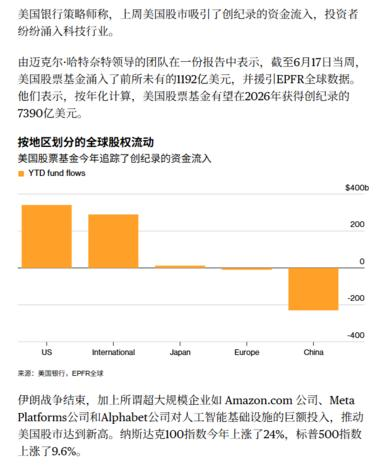
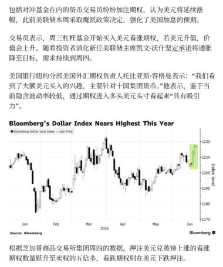
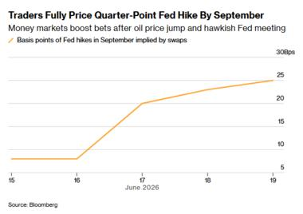
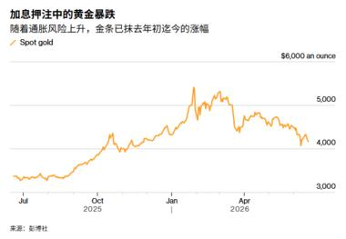
一句话核心： 钱创纪录涌入美股科技股、撤出欧洲和中国；美元逼近年内高点、黄金因加息预期暴跌。这是今天的"主线总帖"。
背景与关键数据： 上周美国股票基金净流入 1192 亿美元（历史纪录），年化有望达 7390 亿美元；欧洲连续 10 周、中国连续 12 周净流出。美股今年：纳指 +24%、标普 +9.6%。黄金方面，高盛下调年底目标：若美联储只是推迟降息→4900 美元/盎司；若今年加息→4400 美元/盎司。
图片解读：
- 图1「按地区划分的全球股权流动」：美国柱子高高在上（约 +250b），国际小幅正、日本/欧洲接近零、中国深跌至约 -250b——资金从中国大举撤离、奔向美国。
- 图2「美元指数逼近年内最高」：DXY 一路爬升至约 1220，逼近年内峰值。
- 图3「交易员已完全计入 9 月加息」：用利率掉期反推的"9 月加息基点"从 6/16 的约 5bp 跳升到 6/19 的约 25bp（正好一次 25bp 加息），因油价跳涨和鹰派议息。
- 图4「加息押注中的黄金暴跌」：现货金从约 5500 顶部一路下杀到约 4000，回吐今年涨幅。
为什么重要： 这四张图把今天所有线索收束成一句话——"美国例外论（US exceptionalism）"的极致演绎：利率高→美元强→资金回流美股→其他地区失血。黄金的暴跌尤其典型：黄金不生息，当利率/美元走强，持有黄金的"机会成本"上升，资金就抛金买美债/美元。
延伸知识： 「黄金与实际利率」是反向关系——实际利率（名义利率减通胀）越高，无息的黄金越没吸引力。所以"加息预期升温→金价跌"几乎是教科书反应。但要注意：如果加息是因为"通胀失控"而非"经济强劲"，黄金有时又会因避险/抗通胀需求反弹——这就是为什么金价有时让人看不懂，关键要看驱动加息的"原因"。
帖 13 ｜ 10:34 ｜ 以色列—真主党停火、伊朗油轮重新出货，油价一周跌 9% #金融
帖子原文：
zerohedge：以色列和真主党同意停火，伊朗正在运送此前因美国封锁而被阻滞的大量石油，本周共发现11艘油轮，运载着总计2000万桶石油，从伊朗阿曼湾的恰巴哈尔港出发。本周油价环比-9%。
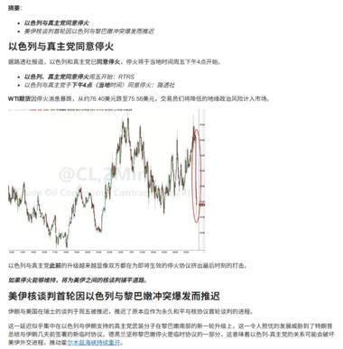
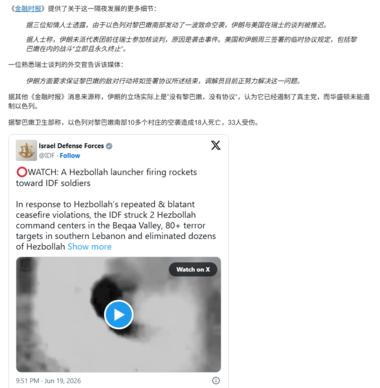
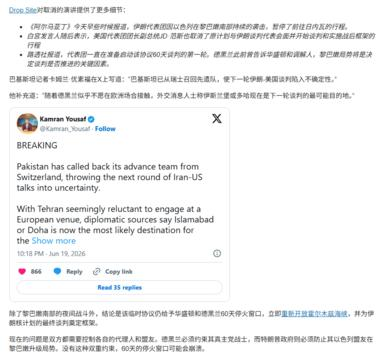
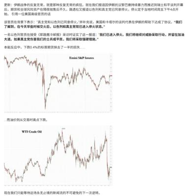
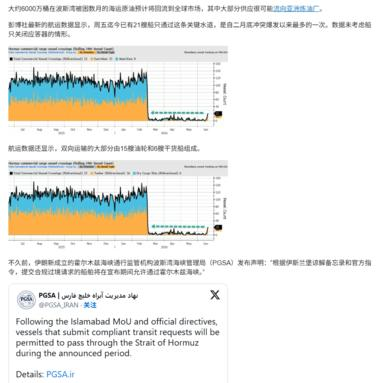
一句话核心： 中东地缘风险骤降——停火 + 伊朗石油重新出海（11 艘油轮、2000 万桶），油价一周暴跌 9%，美股期货收复大半失地。
背景与关键数据： 以色列与真主党同意停火（当地下午 4 点生效）；伊朗本周有 11 艘油轮、合计 2000 万桶原油从恰巴哈尔港出发，此前因美国封锁被滞留的石油重新涌入市场。本周 WTI 油价环比 -9%。同时伊朗—美国核谈判因前期冲突推迟（巴基斯坦撤回先遣队、谈判地点改欧洲/多哈待定）。
图片解读：
- 图1：WTI 原油走势，右端红圈标出本周的急跌。
- 图2：以色列国防军（IDF）推文，称回应真主党违反停火、打击其指挥中心（文字+视频截图）。
- 图3：记者 Kamran Yousaf 推文，"巴基斯坦撤回先遣队，伊美谈判前景不明"。
- 图4：上为 E-mini 标普期货、下为 WTI 原油——停火消息后股指期货收复约一半跌幅，油价同步下挫。
- 图5：霍尔木兹海峡油轮通行量数据图（蓝/橙色密集柱）+ PGSA 推文称"符合规定的船只获准在指定时段通过霍尔木兹海峡"，显示航运恢复。
为什么重要： 油价是通胀的"上游阀门"。油价跌 9% → 利空通胀 → 理论上利好债券/压低加息预期——但今天市场反而在押 9 月加息（见帖 12 图3提到"油价跳涨"）。这里要注意时间差：本帖说的是"本周油价整体 -9%"，而加息预期升温部分源于更早的"油价跳涨"，市场预期在地缘消息间快速来回切换。地缘缓和 + 油价下行，对风险资产（股市）整体是利好。
延伸知识： 「霍尔木兹海峡」是全球石油的咽喉——约 1/5 的海运原油经此出入波斯湾。每当伊朗局势紧张，市场就担心它"封锁海峡"推升油价；一旦通行恢复，油价立刻回落。这就是「地缘风险溢价（geopolitical risk premium）」——油价里有一部分是为"万一打仗断供"买的保险费，风险一降，这部分溢价就被挤掉。
帖 14 ｜ 10:16 ｜ Jefferies 解读今年 618：温和增长、从拼 GMV 转向拼利润 #经济数据
帖子原文：
Jefferies：今年618不是"消费大爆发"，而是"温和增长、结构分化、平台从GMV转向效率和利润"的一届618。行业包裹量和GMV增速都比去年放慢，5月11日至6月14日期间，行业平均每周包裹量同比增长 8%，而去年同期是 17%。专家电话会认为，今年618行业GMV会有轻微同比增长，但商家更加关注盈利，而不是单纯冲GMV。AI成为电商效率工具，京东JoyStreamer数字人直播商家使用量同比增长500%，订单转化率提升77%。
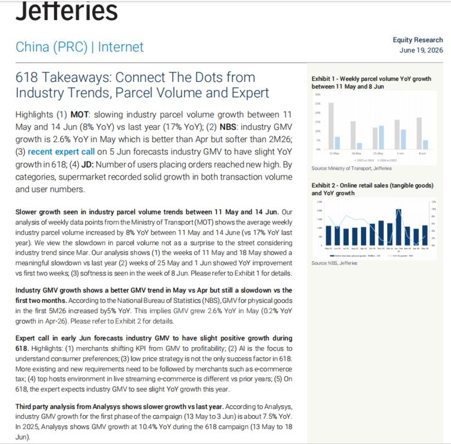
一句话核心： 今年 618 大促"雷声小雨点也小"——增速放缓、平台和商家从冲规模转向保利润，AI 成为提效工具。
背景与关键数据： 包裹量同比 +8%（去年同期 +17%，腰斩）；NBS 数据 5 月实物商品 GMV 同比 +5%（4 月仅 +0.2%）；第三方 Analysys 显示 618 第一阶段 GMV 同比约 +7.5%（去年 +10.4%）。AI 亮点：京东 JoyStreamer 数字人直播商家使用量同比 +500%、订单转化率提升 77%。
图片解读： Jefferies 研报首页，含两张小图：Exhibit 1「5 月 11 日–6 月 8 日周度包裹量同比增速」（今年柱子明显低于去年）、Exhibit 2「线上实物零售额及同比增速」。两图都指向同一结论：增速在放缓但仍为正。
为什么重要： 618、双 11 这类大促是观察中国消费"体温"的高频窗口。今年的关键词是"从 GMV 到利润"——平台不再为了刷成交额而疯狂补贴，商家也更看重赚不赚钱。这反映了中国消费从"量的扩张"转入"质的内卷"，与前面"零售萎缩、信心不足"互相印证。
延伸知识： 「GMV（成交总额）」是电商最爱秀的虚荣指标，但它包含未付款、退货、刷单的水分，并不等于真实收入或利润。平台从"晒 GMV"转向"晒效率/利润"，是行业从烧钱扩张期进入成熟变现期的标志——和当年互联网从"抢用户"转向"抢利润"是同一逻辑。AI 数字人直播能省掉真人主播成本，正是"降本提效"主线的缩影。
今日全图索引
| 帖号 | 时间 | 主题 | 标签 | 图片文件 |
|---|---|---|---|---|
| 1 | 14:20 | 美联储加息概率（CME FedWatch） | #金融 | post1_img1 |
| 2 | 11:49 | 各资产历年回报率表（Charlie Bilello） | #金融 | post2_img1 |
| 3 | 11:42 | AI 占标普权重 39% 逼近泡沫上限（BofA） | #美股 | post3_img1 |
| 4 | 11:35 | 外资持有韩国 Kospi 比例创纪录 38.3% | #股市 | post4_img1 |
| 5 | 11:32 | 中国追加 625 亿元以旧换新补贴 | #TAX | post5_img1 |
| 6 | 11:26 | 全球央行普降时代结束（Bloomberg） | #金融 | post6_img1 |
| 7 | 11:21 | 泽连斯基谈对俄制裁与特朗普表态 | #其他国家经济 | post7_img1, post7_img2 |
| 8 | 11:18 | JPM 下调中国 2Q GDP + 地产时间不一致陷阱 | #经济数据 | post8_img1 |
| 9 | 11:00 | 美国调查 ASML 的 EUV 光刻机流入中国 | #金融 | post9_img1 |
| 10 | 10:57 | 德国喊话"广场协议"逼人民币升值 | #其他国家经济 | post10_img1, post10_img2, post10_img3 |
| 11 | 10:47 | JPM：欧盟设防 vs 中国汽车份额结构性提升 | #经济数据 | post11_img1 |
| 12 | 10:41 | 创纪录资金涌入美股、美元强、黄金跌 | #金融 | post12_img1~img4 |
| 13 | 10:34 | 以色列停火 + 伊朗油轮，油价一周跌 9% | #金融 | post13_img1~img5 |
| 14 | 10:16 | Jefferies 解读 618：从拼 GMV 转向拼利润 | #经济数据 | post14_img1 |
本报告由自动化任务生成，内容为对 Jason 不跪当日帖子的中文解读与背景补充，不构成任何投资建议。图片版权归原作者/原媒体所有。